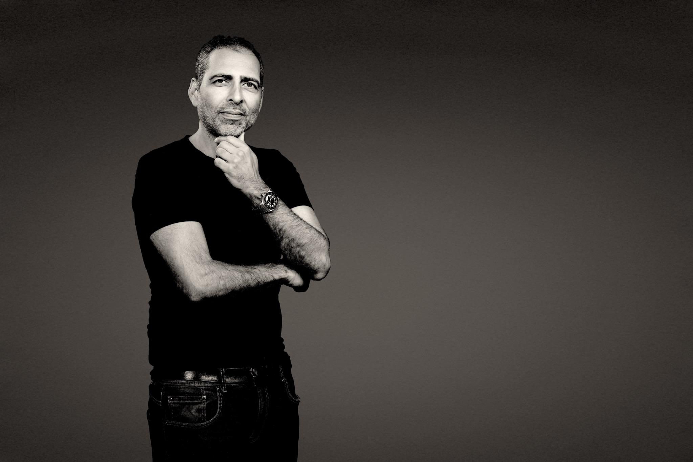
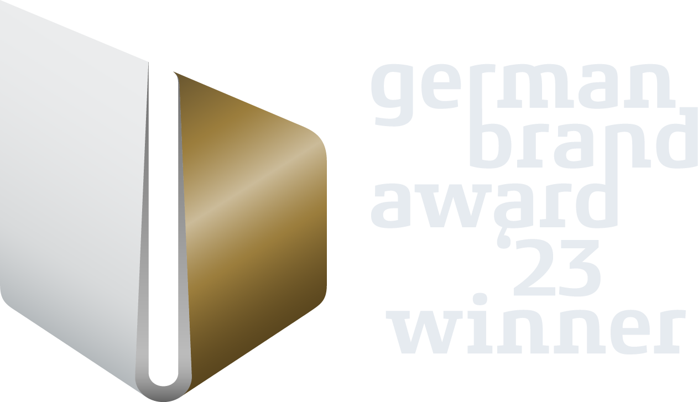
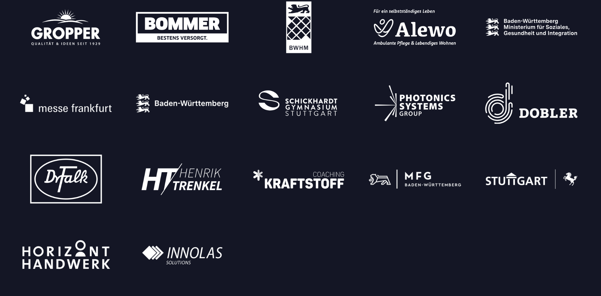
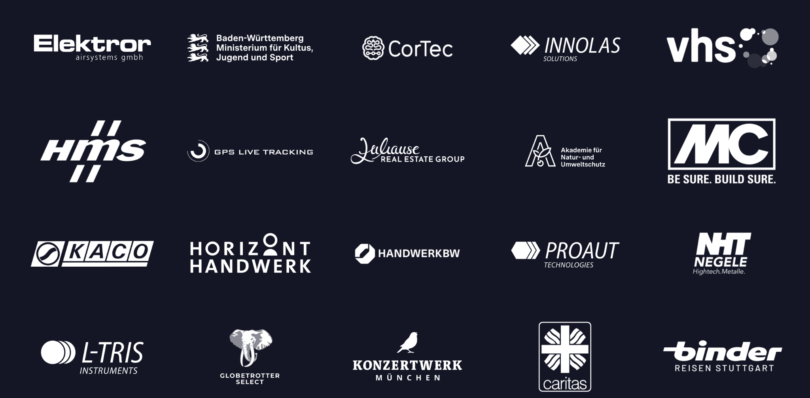

Sprinttag
Der Strategie-Workshop an einem Tag. Wenn ein Thema blockiert und schnell Diagnose, priorisierte Entscheidungen und ein Fahrplan gebraucht werden.
Mission: Klarheit · Stuttgart · seit 1996
Ihsan Khalil arbeitet selbst an Ihrem Thema, sagt klar, was er sieht, und führt Sie auf dem kürzesten Weg zu einer Entscheidung, die im Alltag hält.
„Ihsan spricht eine klare und direkte Sprache, was die Kommunikation stets effizient und zielführend machte. Auf Ihsan kann man zählen.“
Ihre Situation
Arbeitsweise
Die meisten Gespräche beginnen beim Symptom. Meine Arbeit beginnt mit der Frage, was dahinter liegt. Ich höre zu, frage nach und bleibe ruhig, wenn es eng wird. Was ich sehe, sage ich klar, auch wenn es unbequem ist. Am Ende steht eine Entscheidung, die Sie tragen können.
Ihsan Khalil
„Ihsan ist ein Unternehmer mit Herzblut. Er nimmt sich Zeit für persönliche Gespräche, baut eine echte Verbindung auf und gewinnt ein tiefes Verständnis für die Ziele seiner Kunden.“

Der Weg zum Mandat
Formen der Zusammenarbeit
Vom konzentrierten Einstieg bis zur Verantwortung auf Zeit. Gewählt wird der Rahmen, der das konkrete Problem löst, und kein größerer.
Der Strategie-Workshop an einem Tag. Wenn ein Thema blockiert und schnell Diagnose, priorisierte Entscheidungen und ein Fahrplan gebraucht werden.
Wenn Markt, Angebot, Positionierung oder Organisation nicht mehr zur nächsten Unternehmensphase passen.
Wenn die Richtung steht, wichtige Entscheidungen im Alltag aber begleitet, geschärft und nachgehalten werden müssen.
Wenn für Strategie, Transformation oder Neuausrichtung Führungskapazität auf Zeit fehlt.
Wenn Führungsteams oder Gesellschafter eine neutrale Instanz brauchen, die Diskussionen zu tragfähigen Entscheidungen führt.
Ausgewählte Arbeiten
Konkrete Aufgaben und Ergebnisse, anonymisiert, wo Vertraulichkeit es verlangt.
Geschäftsmodell, Angebot und Vertrieb neu geordnet. Ergebnis: Dreischichtproduktion, Gastronomiegeschäft um rund ein Drittel und Einzelhandel um 20 Prozent gesteigert.
Aus einer gewachsenen Struktur entstand eine integrierte Unternehmensgruppe mit klarer Marktposition und neuer strategischer Linie.
Langjährige strategische Begleitung für Handwerk BW, ausgezeichnet mit dem German Design Award 2026.
Belege
Nationale und internationale Auszeichnungen, darunter zweimal der German Brand Award. Die Erfahrung aus drei Jahrzehnten Marken- und Unternehmensentwicklung fließt heute vollständig in die Beratung.

Vertrauen aus vielen Branchen
Ein Auszug aus langjährigen und abgeschlossenen Mandaten.


Perspektiven
2. Juli 2026 · Standpunkt
Warum unternehmerische Klarheit in einem anspruchsvollen Umfeld Voraussetzung ist.
9. Juni 2026 · Klartext
Über Vertrauen, Entscheidungen und die Verantwortung, Orientierung nicht nur zu versprechen.
23. April 2026 · Projekt
German Design Award 2026 für Horizont Handwerk, ein gemeinsamer Erfolg aus Strategie, Dialog und Umsetzung.
Nächster Schritt
Schildern Sie es vertraulich. Sie bekommen eine ehrliche Einschätzung, ob und wie neckarfreunde helfen kann. Kein Pitch.